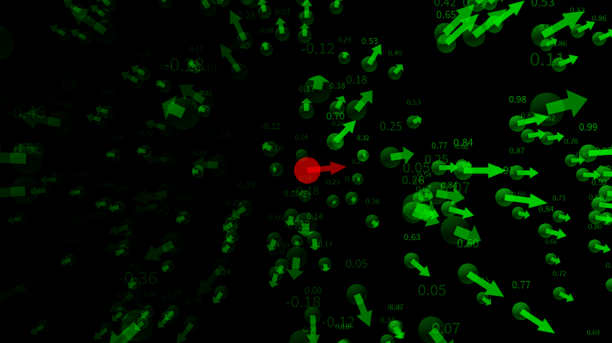
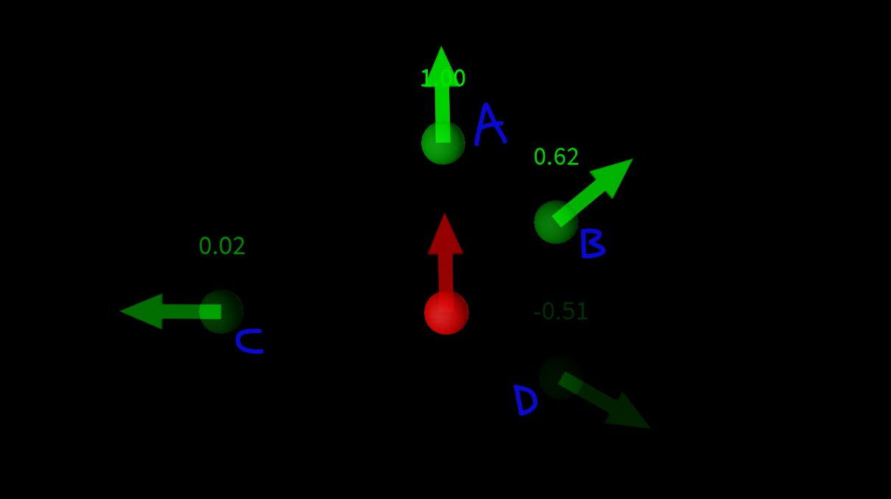
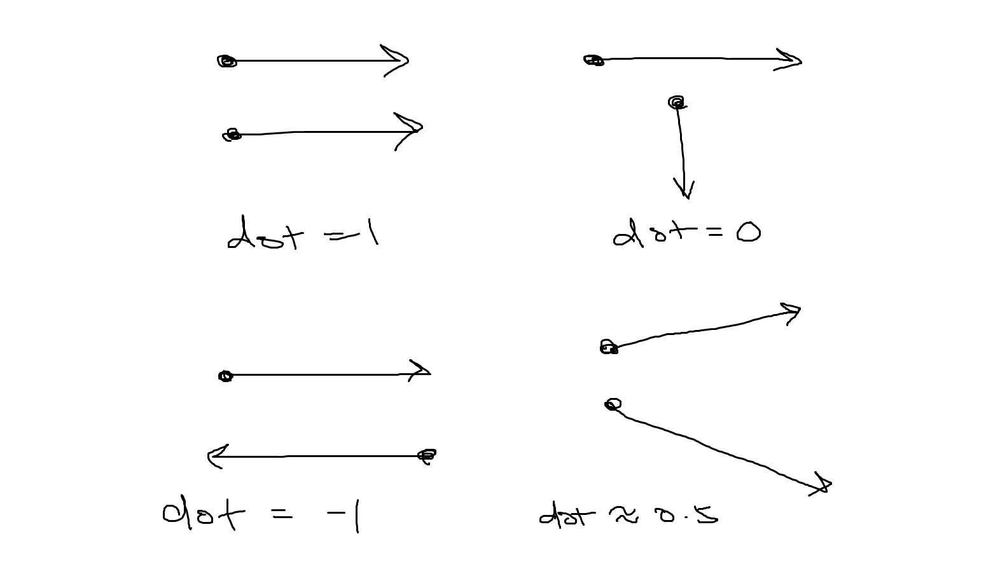

~~~
Miniproject 1:
Vector Field
~~~
TAGS:
Mathy?
(Probably ~5 minutes of reading. Maybe?)
Here is an image of the final project:

Looks cool!
Essentially, what this project is trying to do is trying to find the "lookness" score of the green dots from the red dot.
Whereas the "lookness" score is kinda like 'how off-centered are you looking at?'.
Okay so that can sound a little abstract. It can be a little hard to explain. For demonstration, take a look at this image here:

Letters are notated besides the green dot so you can know which dot I'm talking about!
So dot A is perfectly infront of the red dot - hence a score of 1; dot B is a little off-center, so it gets a score around 0.6; dot C and dot D gets about 0 and -0.5 since it's VERY off-centered from the red dot's orientation.
We could describe them like 'a little off center' or 'very off-center', buuut... how would we find a specific numerical value for this??
Spoilers ahead...
Fortunately, dot products is the answer! Example of dot products in action:

So, if the two vectors are the same direction, the score will be 1; perpendicular would be 0; perfectly opposing would be -1; something in-between will have decimal places scores etc.
Now the job to find the 'lookness' score is a lot easier: we have a vector that represents the orientation of the red dot, and another vector that 'points' at the green dot from the red dot (which I placed the vector on the green dots, so it's easier to see), and we can find the score, simply by finding the dot product of these two vectors. And tada!
It's quite satisfying isn't it?
This looks interesting, but it actually has some actual use cases! For example, if you want to know if you are 'looking' at an object, but you dont want to use raycasts, since objects that are small can be hard to point at, and it may sometimes feel 'unfair' if you slightly missed at it.
An extended hitbox could fix this issue, but it may be a little finicky and inconsistent. You can instead use this method, set a threshold, say 0.95, so if your camera is pointing at the object and it's juuust close enough, it will select the object.
Thanks for reading!